NavDeck
使用手册
自托管 Docker 导航站，为 NAS 玩家而生。卡片化管理你的所有自托管服务，一眼掌握 NAS 状态。
01认识 NavDeck
NavDeck 是一个部署在你自己 NAS 上的导航起始页。把 qBittorrent、Jellyfin、Alist 这些自托管服务做成一张张卡片，配合实时 Docker 状态监控和智能内外网地址切换，点一下就能到达正确的地方。
卡片化导航
分类组织 + 拖拽排序 + 批量管理，服务再多也井井有条。
Widget 栏
NAS 状态、资源水位、倒数日 / 正数日，实例化自由组合。
内外网自动切换
在家走内网，在外走公网，点击卡片永远跳对地址。
Lucky 规则同步
一键把 Lucky 反代规则同步成卡片，不再手动维护。
拼音全局搜索
⌘/Ctrl+K 唤起，支持拼音和首字母缩写匹配。
备份 / 恢复
一键导出 zip，配置和上传文件完整带走。
02快速上手
登录
首次使用请查看 .env 中的默认账号（admin / changeme），登录后请立即前往「设置 → 通用」修改密码。
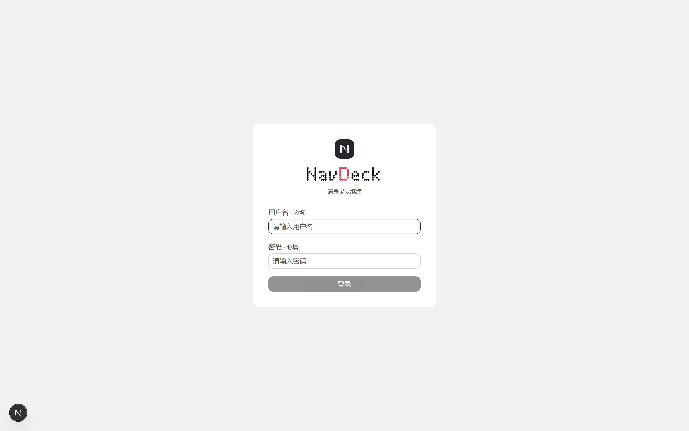
基本操作速查
- ⌘/Ctrl + K —— 全局搜索卡片
- 顶部搜索框 —— 输入任意关键词回车，直接跳转当前选中的搜索引擎
- 右上工具栏 ✏️ —— 进入编辑模式，可拖拽卡片 / 分类，二次点击进入批量删除
- 右上工具栏 ☀️/🌙 —— 明暗主题切换
- Widget 栏 ＋ 按钮 —— 添加新的 Widget 实例
03主页总览
主页自上而下分为四个区域：品牌与时间、全局搜索框、Widget 栏和分类卡片区。桌面端 Widget 靠右，移动端自动移到下方。
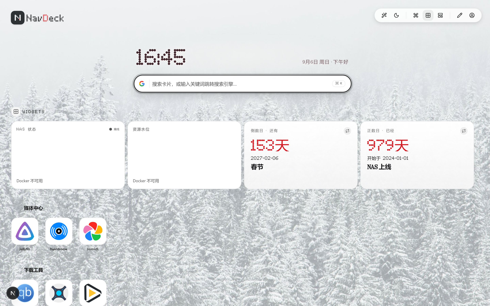
04卡片与分类
添加卡片
点击分类标题旁的 ＋ 新建卡片，填写名称与地址即可。图标有三种来源：
- 自动抓取 favicon —— 填完地址自动尝试获取网站图标
- 内置图标库 —— 275+ 精选自托管服务图标，支持搜索
- 本地上传 —— 上传自定义图片
卡片地址与内外网
每张卡片可以同时配置内网地址和外网地址。网络策略设为「自动」时，NavDeck 会探测哪个地址可达并优先跳转；也可以在「设置 → 通用」固定为内网或外网模式。
分类管理
「设置 → 分类」中可以新建、重命名、拖拽排序分类，删除分类时其中的卡片会自动移入「未分类」。
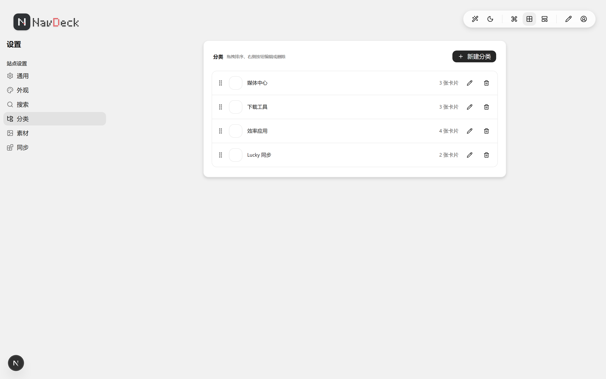
05全局搜索
按 ⌘/Ctrl + K 唤起全局搜索。匹配规则覆盖名称子串、全拼和拼音首字母缩写——输入「jlc」也能找到「Jellyfin」。
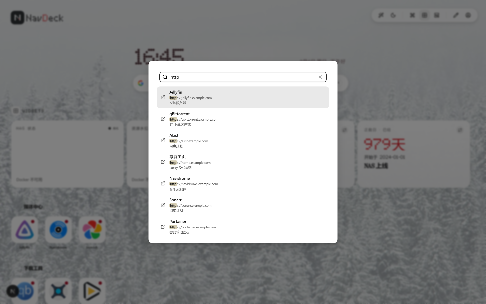
顶部搜索框则是搜索引擎跳转入口：输入非卡片关键词回车，直接用当前选中的引擎搜索。引擎可以在「设置 → 搜索」中增删改和排序。
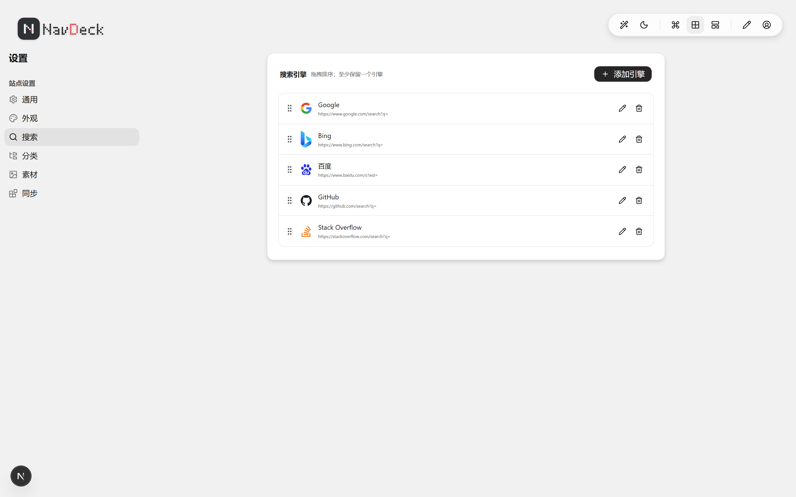
06Widget 小组件
Widget 栏支持 4 种小组件，同类可重复添加、每个实例独立配置，支持调整大小和拖拽排序：
NAS 状态
Docker 容器运行状态总览（在线 / 停止 / 总数）。
资源水位
CPU / 内存 / 磁盘 IO 实时水位，30 秒自动刷新。
倒数日
距离未来的重要日子还有几天，支持多日期项与每月重复。
正数日
过去的重要日子已经过去了多少天。
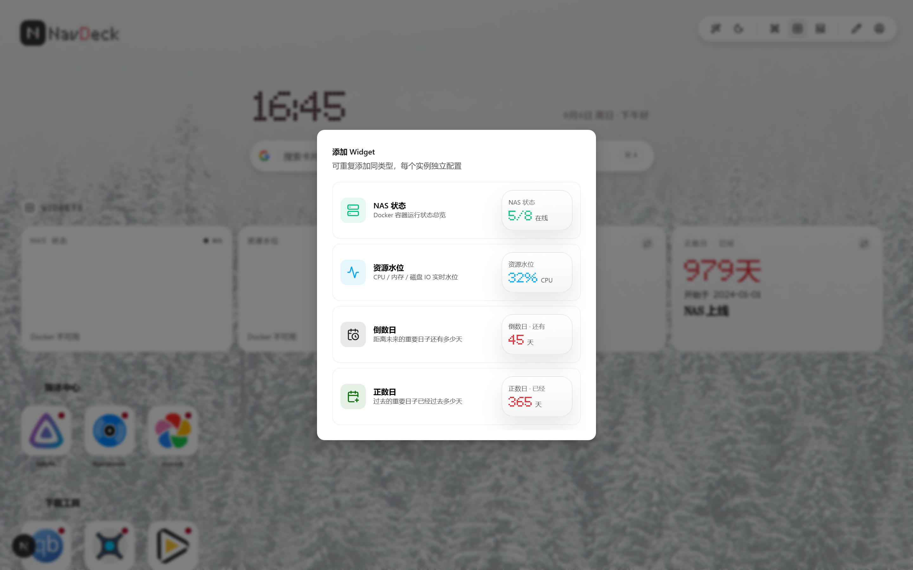
Docker 数据通过挂载的 docker.sock（或 DOCKER_HOST）获取；不可用时 Widget 会降级显示，不影响其他功能。
07Lucky 规则同步
如果你在用 Lucky 做反向代理，NavDeck 可以直接读取它的 Web 服务规则，一键同步成卡片：
- 在 Lucky 后台「设置」页最底部获取 OpenToken
- 打开「设置 → 同步」，启用 Lucky 同步，填入后台地址与 OpenToken
- 点击「立即同步」—— 反代规则的前端域名 → 外网地址，后端地址 → 内网地址，自动建卡
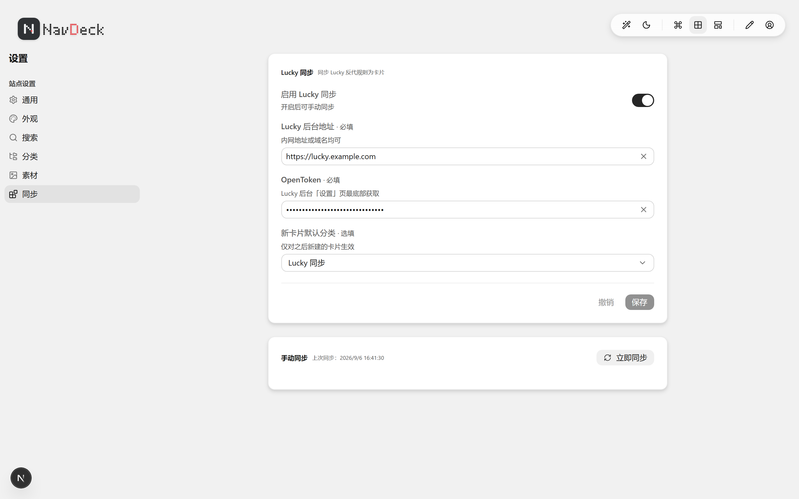
同步是全量 diff：Lucky 侧删除或禁用的规则，对应卡片只标记失效，不会立刻删除——你可以在同步页一键恢复跳过的规则，或彻底清理。
08外观与壁纸
「设置 → 外观」提供明暗主题（亮色 / 暗色 / 跟随系统）、界面字体大小、卡片状态灯开关，以及自定义首页壁纸。
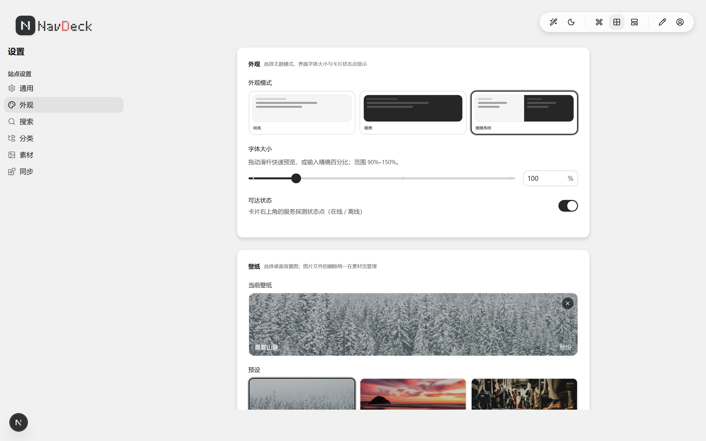
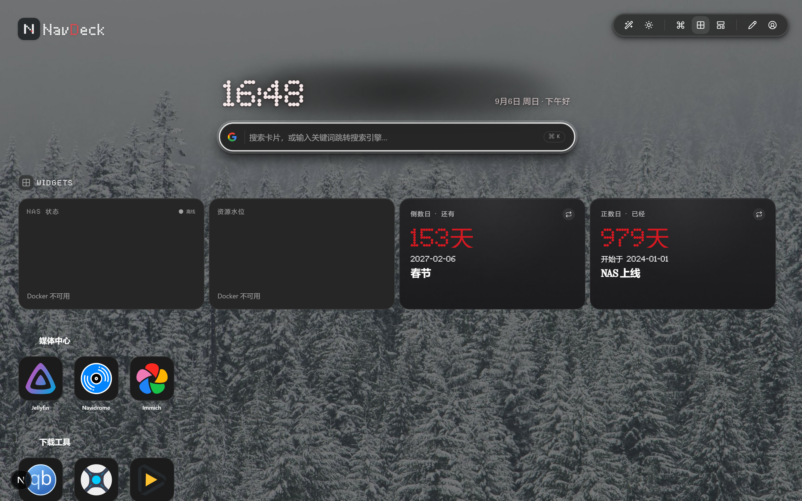
上传过的图标与壁纸统一在「设置 → 素材」中管理，可查看引用情况并安全清理。
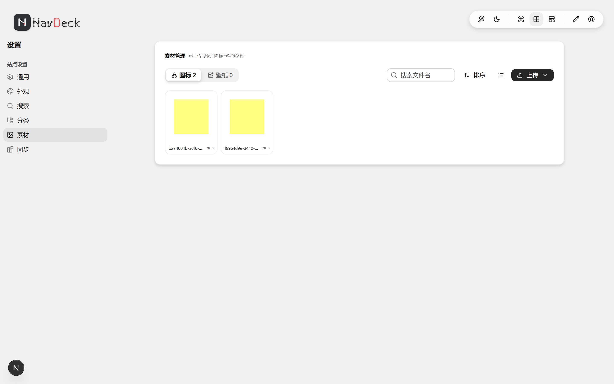
09站点设置
「设置 → 通用」集中管理站点级配置：
- 品牌 —— 自定义站点标题与 Logo
- 账号 / 安全 —— 修改用户名与密码（首次登录后务必改密）
- 网络 —— 网络策略：自动探测 / 固定内网 / 固定外网
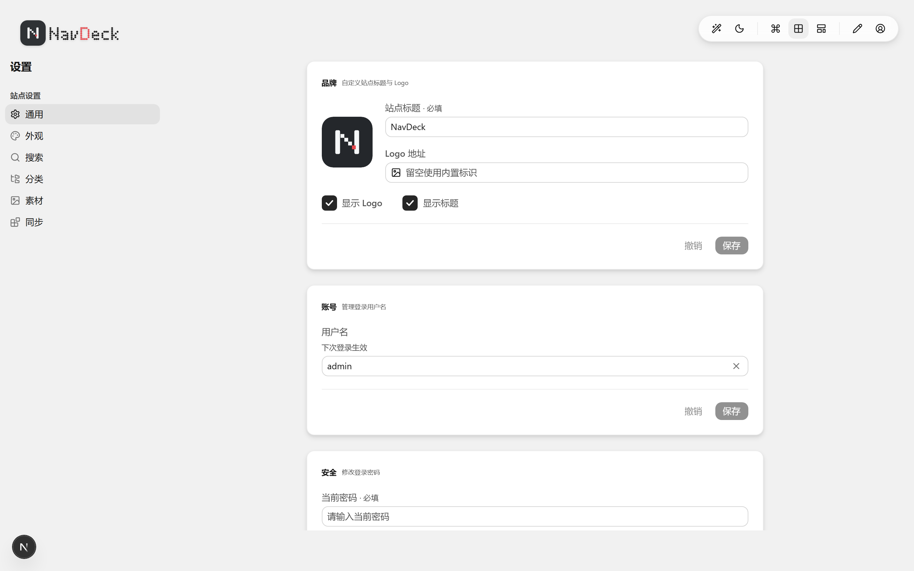
10备份与恢复
「设置 → 通用 → 备份」：
- 导出 —— 下载 zip 包，包含全部配置数据 + 上传的图标 / 壁纸文件
- 导入 —— 支持上传 zip 或裸 JSON，恢复到任意 NavDeck 实例
建议在修改大量配置或迁移 NAS 前先导出一份备份。
11部署
推荐使用 Docker Compose 一键部署（详见仓库根目录 README.md）：
docker compose up -d --build —— 容器启动时自动执行数据库迁移与种子写入，数据持久化在 ./data 目录。Docker 监控需挂载 /var/run/docker.sock。
12开源致谢
NavDeck 站在众多优秀开源项目的肩膀上，感谢这些项目（排名不分先后）：
| 项目 | 用途 |
|---|---|
| Next.js | 全栈框架（App Router + Turbopack） |
| React / TypeScript | UI 与类型系统 |
| Astryx | UI 组件库与设计系统（neutral 主题） |
| Tailwind CSS | 原子化样式 |
| Prisma + libsql | 数据库 ORM 与 SQLite 驱动 |
| Auth.js (NextAuth v5) + bcrypt.js | 认证与密码哈希 |
| dnd-kit | 卡片 / 分类 / Widget 拖拽排序 |
| React Hook Form + Zod | 表单与数据校验 |
| pinyin-pro | 拼音 / 首字母搜索匹配 |
| dockerode | Docker 容器状态与资源监控 |
| cheerio | favicon 抓取解析 |
| Lucide | 界面图标 |
| dashboard-icons (homarr-labs) | 275+ 内置自托管服务图标 |
| Lucky | 反代规则 OpenAPI 同步数据源 |
| SWR + date-fns + adm-zip | 数据请求 / 日期处理 / 备份打包 |
| Vitest + Playwright | 单元测试与端到端测试 |
| Biome + Husky + commitlint | 代码质量与提交规范 |
NavDeck 基于 MIT License 开源，欢迎 Star、Issue 与 PR。